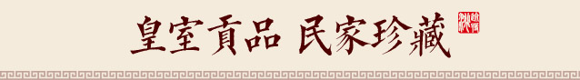

已有2200多年的历史,因其"地处金星与婺女两星争华之处"得名,是一个生态环境良好,整洁亮绿、文明有序、居住舒适的现代化山水园林城市。
金华，古称婺州，已有2200多年的历史,因其"地处金星与婺女两星争华之处"得名,是一个生态环境良好,整洁亮绿、文明有序、居住舒适的现代化山水园林城市。
金华，古称婺州，已有2200多年的历史,因其"地处金星与婺女两星争华之处"得名,是一个生态环境良好,整洁亮绿、文明有序、居住舒适的现代化山水园林城市。
火腿的制作经历鲜猪腿验收、修割腿坯、腌制（腌制间、腿床，总盐量为鲜腿重的9%~12%，亚硝酸钠用量≤0.3‰）（共六次）、浸腿、洗腿（盖印、第一次、第二次）、晒腿、整形（若干次）、发酵保管（温度≤35℃；相对湿度70%~82%，发酵间）（修干刀、虫害检查）、落架分级、堆叠（翻堆擦油）、成品等八十几道工序
◎火腿内含丰富的蛋白质和脂肪，多种维生素和矿物质； ◎火腿制作经冬历夏，经过发酵分解，营养成分更易被人体所吸收，具有养胃生津、益肾壮阳、固骨髓、健足力、愈创口等作用 ◎金华火腿在长达数个月的发酵过程，在酸、碱或酶的共同作用下，分解出多达18种氨基酸，其中8种是人体不能自行合成的必备氨基酸 ◎据权威数据检测表明，每百克火腿肉中，含热量831千焦，含蛋白质34.4克，脂肪6.28克，铁3毫克，钾673毫克及大量氨基酸，利于人体有效吸收营养。
◎食用方法 金华火腿，可分为火爪、火踵、上方、中方和滴油等五个部分；1.“上方”肌肉纤维均匀致密，肉质量最好，约占全腿质量的35%左右，可供制 作火方驻及切大片、花形片待等；2.“火踵”可作整料炖或切块、切半圆、圆片等，大都带皮食用，所以火功要足；
◎1905年获德国莱比锡万国博览会金奖 ◎1915年获巴拿马国际商品博览会金奖 ◎1929年获杭州西湖国际博览会特等奖至此，金华火腿走出了国门，成为具有世界级影响力的中华美食 ◎1995年4有6日，首批百家中国特产之乡命名宣传活动组委会在北京人民大会堂授予浙江省金华市“中国金华火腿之乡”称号。
已全部加载完~